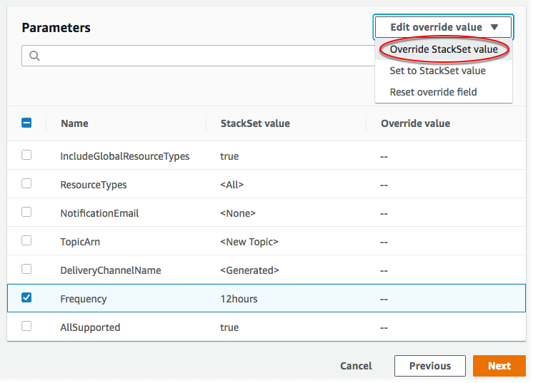

Die vorliegende Übersetzung wurde maschinell erstellt. Im Falle eines Konflikts oder eines Widerspruchs zwischen dieser übersetzten Fassung und der englischen Fassung (einschließlich infolge von Verzögerungen bei der Übersetzung) ist die englische Fassung maßgeblich.
Überschreiben von Parametern auf Stack-Instances
In einigen Fällen ist es möglicherweise empfehlenswert, dass Stack-Instances in bestimmten Regionen oder Konten andere Eigenschaftswerte besitzen als diejenigen, die im Stack-Set selbst angegeben werden. So möchten Sie beispielsweise abhängig davon, ob ein Konto für die Entwicklung oder die Produktion verwendet wird, für einen bestimmten Parameter einen anderen Wert angeben. Für diese Situationen erlaubt AWS CloudFormation Ihnen in Stack-Instances das Überschreiben von Parameterwerten nach Konto und Region. Sie können Vorlagen-Parameterwerte beim Erstellen neuer Stack-Instances oder auch bei vorhandenen Stack-Instances überschreiben. Nur Parameter, die zuvor in Stack-Instances überschrieben wurden, können wieder auf die im Stack-Set angegebenen Werte zurückgesetzt werden.
Die überschriebenen Parameterwerte werden auf Stack-Instances in den von Ihnen ausgewählten Konten und Regionen angewandt. Während Stack-Set-Aktualisierungen werden alle Parameterwerte, die für eine Stack-Instance überschrieben wurden, nicht aktualisiert, sondern behalten Ihren überschriebenen Wert bei.
Sie können nur Parameterwerte überschreiben, die im Stack-Set angegeben werden. Um einen Parameter selbst hinzuzufügen oder zu löschen, müssen Sie die Stack-Set-Vorlage aktualisieren. Wenn Sie einen Parameter zu einer Stack-Set-Vorlage hinzufügen, müssen Sie zuerst alle Stack-Instances mit dem neuen, im Stack-Set angegebenen Parameter und Wert aktualisieren, bevor Sie diesen Parameterwert in einer Stack-Instance überschreiben können. Nachdem alle Stack-Instances mit dem neuen Parameter aktualisiert wurden, können Sie den Parameterwert in den einzelnen Stack-Instances wie gewünscht überschreiben.
Informationen darüber, wie Stack-Set-Parameterwerte beim Erstellen von Stack-Instances überschrieben werden, finden Sie unter Hinzufügen von Stacks zu einem Stack-Set.
Themen
Überschreiben von Parametern auf Stack-Instances mithilfe der AWS Management Console
Öffnen Sie die - AWS CloudFormation Konsole unter https://console.aws.amazon.com/cloudformation
. -
StackSets. Wählen Sie auf der StackSets -Seite das Stack-Set aus, das Sie unter Erstellen eines Stack-Sets erstellt haben. Im Rahmen dieser Anleitung haben wir ein Stack-Set mit der Bezeichnung
my-awsconfig-stackseterstellt. -
Wählen Sie bei ausgewähltem Stack-Set im Menü Aktionen die Option Parameter überschreiben StackSet aus.

-
Geben Sie auf der Seite Set deployment options (Bereitstellungsoptionen festlegen) die Konten und Regionen für die Stack-Instances ein, deren Parameter Sie überschreiben möchten.
AWS CloudFormation stellt Stacks in den angegebenen Konten innerhalb der ersten Region bereit und fährt dann mit der nächsten usw. fort, vorausgesetzt, dass die Bereitstellungsfehler einer Region eine angegebene Fehlertoleranz nicht überschreiten.
-
[Selbstverwaltete Berechtigungen] Wählen Sie für Deployment targets (Bereitstellungsziele) die Option Deploy stacks in accounts (Stacks in Konten bereitstellen) aus. Fügen Sie einige oder alle Zielkonto-IDs ein, die Sie verwendet haben, um Ihr Stack-Set in Erstellen eines Stack-Sets zu erstellen.
[Serviceverwaltete Berechtigungen] Wählen Sie für Deployment targets (Bereitstellungsziele) die Konten in Ihrer Organisation für die Bereitstellung aus.
-
Wählen Sie Deploy to organizational units (OUs) (Für Organisationseinheiten (OUs) bereitstellen) aus. Wählen Sie eine oder mehrere Ziel-OUs aus, die Sie zum Erstellen des Stack-Sets in Erstellen eines Stack-Sets verwendet haben. Die überschriebenen Parameterwerte gelten nur für die Konten, die sich derzeit in den Ziel-OUs und ihren untergeordneten OUs befinden. Konten, die den Ziel-OUs und ihren untergeordneten OUs zukünftig hinzugefügt werden, verwenden die Stack-Set-Standardwerte und nicht die überschriebenen Werte.

-
Wählen Sie Deploy to accounts (Für Konten bereitstellen) aus. Fügen Sie einige oder alle Ziel-OU-IDs oder Konto-IDs ein, die Sie verwendet haben, um Ihr Stack-Set in Erstellen eines Stack-Sets zu erstellen.

-
-
Fügen Sie für Deployment regions (Bereitstellungsregionen) eine oder mehrere der Regionen hinzu, in denen Sie Stack-Instances für dieses Stack-Set bereitgestellt haben.
Wenn Sie mehrere Regionen hinzufügen, bestimmt die Reihenfolge der Regionen unter Specify regions (Regionen angeben) die Reihenfolge ihrer Bereitstellung.
-
Für Deployment options (Bereitstellungsoptionen):
-
Für Maximum concurrent accounts (Maximale Anzahl paralleler Konten) behalten Sie die Standardwerte Number (Zahl) und 1 bei.
Das bedeutet, dass Ihren Stack jeweils nur in einem Konto AWS CloudFormation bereitstellt.
-
Behalten Sie für Failure tolerance (Fehlertoleranz) die Standardwerte Number (Zahl) und 0 bei.
Das bedeutet, dass maximal eine Stack-Bereitstellung in einer Ihrer angegebenen Regionen fehlschlagen kann, bevor die Bereitstellung in der aktuellen Region AWS CloudFormation stoppt und die Bereitstellung in den verbleibenden Regionen abbricht.
Wählen Sie Weiter aus.
-
-
-
Überprüfen Sie auf der Seite Überschreibungen angeben den Parameter Häufigkeit und wählen Sie dann im Menü Überschreibungswert bearbeiten die Option StackSet Wert überschreiben aus.
 -
Wählen Sie unter StackSet Parameterwerte überschreiben die Option 6 Stunden für den Parameter Häufigkeit und dann Änderungen speichern aus. Sie weisen AWS CloudFormation an, den Frequency (Frequenz)-Parameterwert zu überschreiben und für alle Stack-Instances der angegebenen Konten in den angegebenen Regionen 6hours (6 Stunden) zu verwenden. Wählen Sie Weiter aus.
Anmerkung
Um überschriebene Parameter wieder auf festzulegen, indem Sie den im Stack-Set angegebenen Wert verwenden, überprüfen Sie alle Parameter und wählen Sie im StackSet Menü Überschreibungswert bearbeiten die Option Auf Wert festlegen aus. Dadurch werden alle überschriebenen Werte beim Aktualisieren der Stack-Instances entfernt.
-
Überprüfen Sie auf der Seite Review (Prüfen) Ihre Auswahl. Beachten Sie, dass der Parameter Frequency einen Wert in der Spalte Override value (Wert überschreiben) anzeigt, was angibt, dass sein Wert auf der Stack-Ebene überschrieben wurde.
Bevor Sie Parameter für diese Stack-Instances überschreiben können, müssen Sie das Kontrollkästchen im Bereich Capabilities (Funktionalitäten) aktivieren. Sie erkennen damit an, dass einige der Ressourcen, die Sie mit dem Stack-Set erstellen, unter Umständen neue IAM-Ressourcen und -Berechtigungen erfordern. Weitere Informationen zu potenziell erforderlichen Berechtigungen finden Sie unter Bestätigung von IAM-Ressourcen in - AWS CloudFormation Vorlagen in diesem Handbuch. Wenn Sie bereit sind, wählen Sie Submit (Einsenden) aus.
-
AWS CloudFormation beginnt mit der Aktualisierung Ihrer Stack-Instances. Zeigen Sie Fortschritt und Status der Stack-Instances auf der StackSet-Detailseite an. Diese Seite wird geöffnet, wenn Sie Submit (Einsenden) auswählen.
Überschreiben von Parametern auf Stack-Instances mithilfe der AWS CLI
Wenn Sie als delegierter Administrator agieren, müssen Sie den Parameter --call-as jedes Mal auf DELEGATED_ADMIN festlegen, wenn Sie einen StackSets-Befehl ausführen.
--call-asDELEGATED_ADMIN
Führen Sie den update-stack-instances AWS CLI Befehl aus und geben Sie an--parameter-overrides. Weitere Informationen zur Angabe von finden Sie --parameter-overridesunter Parameter in der API AWS CloudFormation -Referenz zu und update-stack-instances in der AWS CLI -Befehlsreferenz.
Im hier gezeigten Beispielbefehl ändern wir die Standardhäufigkeit der Snapshot-Zustellung für die Konfiguration des Übermittlungskanals für die angegebenen TwentyFourStack-Instances von _Stunde in Twelve_Hours.
-
Führen Sie den folgenden Befehl aus. Geben Sie für
--stack-set-nameden Stack-Set-Namenmy-awsconfig-stacksetan.Legen Sie die Fehlertoleranz und die maximale Anzahl gleichzeitiger Konten fest, indem Sie im Parameter
FailureToleranceCountwie im folgenden Beispiel den Wert für0aufMaxConcurrentCountund für1auf--operation-preferencesfestlegen. Wenn Sie stattdessen Prozentwerte sehen möchten, verwenden SieFailureTolerancePercentageoderMaxConcurrentPercentage. Für diesen Walkthrough verwenden wir Zählung, nicht Prozentsatz.Anmerkung
Der Wert von
MaxConcurrentCounthängt vom Wert vonFailureToleranceCountab.MaxConcurrentCountist höchstens eins mehr alsFailureToleranceCount.[Selbstverwaltete Berechtigungen] Geben Sie die Konto-IDs an, für die Sie Parameterwerte für Stack-Instances überschreiben möchten.
aws cloudformation update-stack-instances --stack-set-namemy-awsconfig-stackset--parameter-overrides ParameterKey=MaximumExecutionFrequency,ParameterValue=TwentyFour_Hours\\,Twelve_Hours--operation-preferencesFailureToleranceCount=0,MaxConcurrentCount=1--accounts '["012345678901"]' --regions '["eu-west-1", "us-west-2"]'[Serviceverwaltete Berechtigungen] Geben Sie die Organisations-Root-ID, OU-IDs oder AWS Organizations -Konto-IDs an, für die Sie Parameter auf Stack-Instances überschreiben möchten. In diesem Beispiel überschreiben wir Parameterwerte für Stack-Instances in allen Konten in der OU mit der ID
ou-rcuk-1x5j1lwo.Die überschriebenen Parameterwerte gelten nur für die Konten, die sich derzeit in der Ziel-Organisationseinheit und den untergeordneten Organisationseinheiten befinden. Konten, die zukünftig der Ziel-OU und ihren untergeordneten OUs hinzugefügt werden, verwenden die Stack-Set-Standardwerte und nicht die überschriebenen Werte.
aws cloudformation update-stack-instances --stack-set-namemy-awsconfig-stackset--parameter-overrides ParameterKey=MaximumExecutionFrequency,ParameterValue=TwentyFour_Hours\\,Twelve_Hours--operation-preferencesFailureToleranceCount=0,MaxConcurrentCount=1--deployment-targets OrganizationalUnitIds='["ou-rcuk-1x5j1lwo"]' --regions '["eu-west-1", "us-west-2"]' -
Stellen Sie sicher, dass Ihre Parameterwerte auf Stack-Instances erfolgreich überschrieben wurden, indem Sie den
describe-stack-set-operation-Befehl ausführen, um den Status und die Ergebnisse des Aktualisierungsvorgangs anzuzeigen. Verwenden Sie als--operation-iddie Operations-ID, die durch den Befehlupdate-stack-instanceszurückgegeben wurde.aws cloudformation describe-stack-set-operation --operation-idoperation_ID